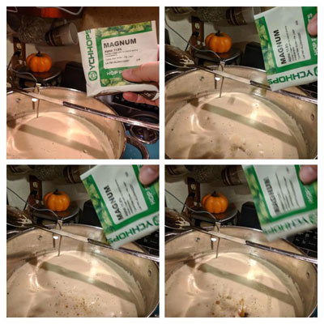
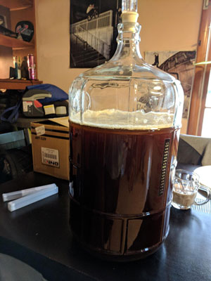

Necessary Equipment
Below is a list of items that will be necessary to begin your homebrewing journey. There are, however, two items on the list below that are optional. The tilt digital hydrometer is a bluetooth hydrometer that you can leave in your beer during the fermentation process. With the Tilt Application you are able to access and record these measurements. This enables you you take fewer samples, reducing the risk of possible contamination, and over oxygenating your beer. As an added bonus it also means more beer saved to enjoy later with friends.
The other handy item is the wort chiller. This is nice to have -becasue it rapidly cools down your wort once you have terminated the boil. This reduces the amount of 'air-time' your wort receives between cooling and pitching, which in turn reduces the risk of possible contaimination. Aside from those reasons it really does cool your wort down so much faster than ice baths alone, so its a nice piece of equipment that speeds up production.
- 5-Gallon Brew Bucket
- 5-Gallon Glass Carboy
- 5-Gallon Stainless Pot/ Brew Kettle
- Thermometer (standard/ digital)
- Sanitizer & cleanser
- Tilt digital hydrometer/ Hydrometer
- bottle capper/ kegging setup
- long-handled stainless-steel spoon
- Hoses & Siphon with clamp
- Wort Chiller
- Airlocks
The Brewing Process
Below is the process for extract brewing. The process is generic and fairly simple. Keep in mind depending upon the recipe and the style your malt and hop additions and fermentation times may vary.
SANITIZE:
Thoroughly clean & sanitize all of your brewing equipment and utensils that will come into contact with any ingredients.
STEEP GRAINS:
Pour 2.5 gallons of clean water into your brew kettle and begin to heat. When the temperature is between (150-165 degrees F) pour the crushed grains into the grain bag and tie a loose knot at the top of the bag. Steep the bag for twenty minutes- be careful not to allow your steeping water to exceed 170 degrees, which leeches tannis into the wort. Remove the grain bag without squeezing. Your water is now wort.
BOIL:
Bring your wort to a gentle rolling boil, add Liquid Malt Extract. Continuously stir the extract into the wort so that it does not carmelize at the bottom of your kettle.
BITTERING HOPS:
Add hops and boil for 40 minutes. (Bittering hops add hop flavors.)
AROMA SCHEDULE:
Next add the next pack of hops and boil for 5 minutes. (Aroma hops add a nice aroma to your brew.)
DRY MALT:
Add the Dry Malt Extract, and let boil for 5 minutes.
AROMA HOPS:
Add the final pack hops and let boil for 10 minutes.
TERMINATE BOIL:
You want to cool your wort rapidly to avoid contamination. If you have a wort chiller it should be clean and sanitized before use. If you do not have a wort chiller you can use an icebath. You want to bring the temperature down to 60 degrees, that is a healthy temp for your yeast to thrive but it will also give you an accurate hydrometer reading.
ADD WATER:
Gently pour your wort to your primary fermenter. Then add enough clean water to bring yur volume up to 5 gallons. Thoroughly stir and then take a sample for your hydrometer reading. Make sure to record this number.
PITCH YEAST:
Now you can sprinkle the yeast over the surface of your wort, gently stir and then secure the lid on you fermentation bucket. Fill your airlock to the water line and gently twist it into the grommit in the lid. Move the fermenter to a temperature-stable area between (53-59 degrees F).
PRIMARY FERMENTATION:
The wort will begin to ferment within 48 hours and you will notice co2 releasing out of the airlock. You should monitor the airlock for co2 release and take samples when it begins to slow down. Keep in mind different styles may require different fermentation times, see recipes, for guidelines. Any speciality ingredients or additives like barrel chips, or flavorings can be added during primary or secondary fermentation.

SECONDARY FERMENTATION:
When the gravity remiains the same for two full days transfer your beer to a clean sanitized 5- gallon carboy. If you are using a top-feeding yeast (ale yeast) you should continue to monitor your brew & again follow guidelines for secondary fermentation. If you are using a bottom feeding yeast (lager yeast) Lower the temp 1 to 3 degrees per day until it reaches (35- 42 degrees F). Lager within this temperature range 3-4 weeks.
NEXT STEPS:
Now its either kegging or bottiling day. So you need to get your hydrometer and take a final gravity and record this number. You can do the calculation, (OG-FG)* 131.25 = ABV% or use an ABV calculator to find the alcohol percentage.
TO BOTTLE:
If you have chosen to bottle you will need to make sure all of your bottles and caps are clean and sanitized. In a small pan dissolve 5 oz of priming sugar into 2 cups of boiling water. Carefully pour this mixture into your beer and stir gently, avoiding the bottom which could have 3-4 inches of sediment. Begin siphoning beer into bottles, leaving 1 inch of head space and cap.
TO KEG:
There are several kegging methods out here, after testing different practices, this is what we have found works best. Siphon your beer into a clean, sanitized keg, and fill keg with co2. Inspect kegs for any leaks that may occur. Gently rock keg and then purge. Refill keg with co2 and let sit overnight. The following day store keg in your your setup, and hook up your co2 line. Co2 infuses into your beer faster at colder temperatures. Allow your keg to sit at about 10-15 psi for about a week but dont forget to monitor your regulator. When its time to serve turn the psi down to about 7.